你怕的不是孩子玩，
怕的是他玩得没价值
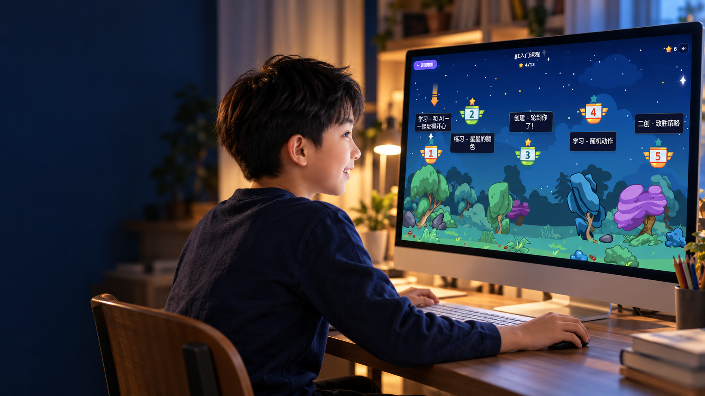
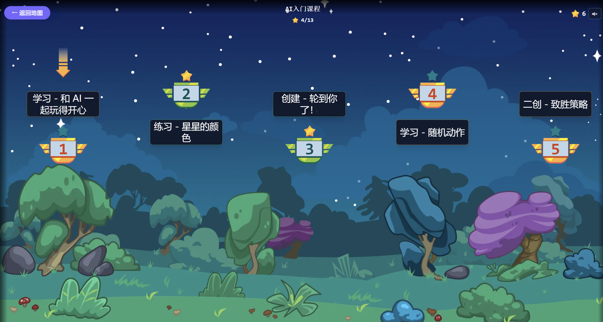
AI 自学课 · 扣哒宇宙AI课 · 8 岁起
从想法到作品，培养孩子面向 AI 时代的创造力
让孩子学会用 AI，把自己的想法变成作品。
从创意表达，到编程开发与项目实践，学会创造，也学会解决问题。
11大
课程系列
485个
闯关关卡
200+
标准课时
课程整体规格
各系列开放进度以产品当前版本为准
你是不是也这样想？
从“要我学”到“我要学”，
只差一堂对的课
你不懂 AI，
但孩子不能不懂
别的孩子已经在用 AI 做APP了，
你的孩子还在刷视频
一次选对，
陪孩子从小学一路走到高中
AI 创作星球
11大AI创作星球，让孩子把想法变成作品
从创意表达，到真实应用，让每一次学习都有看得见的成果。
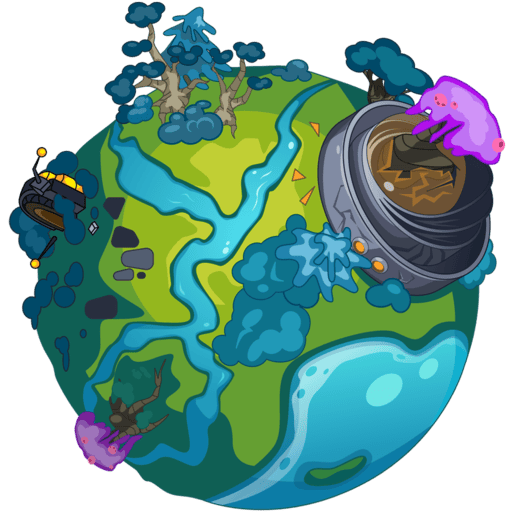
AI创作启蒙星球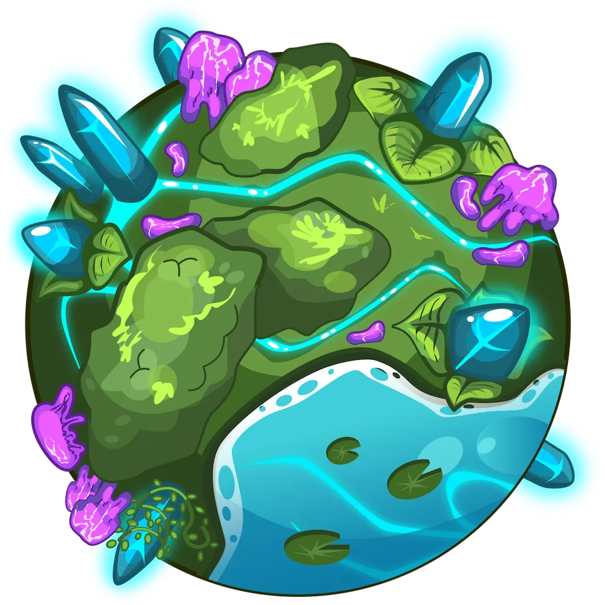
AI智能应用星球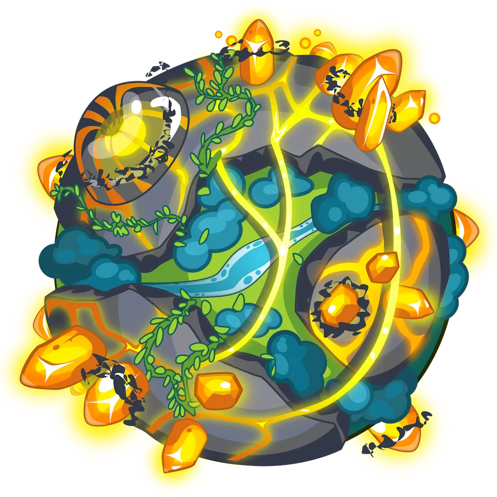
AI智能开发星球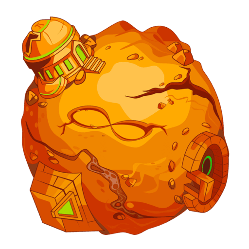
AI数据研究星球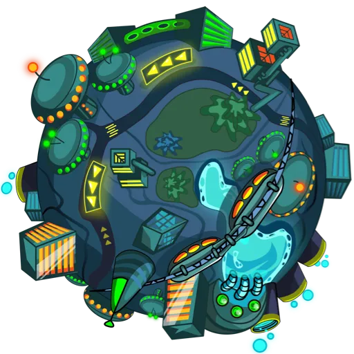
AI项目实践星球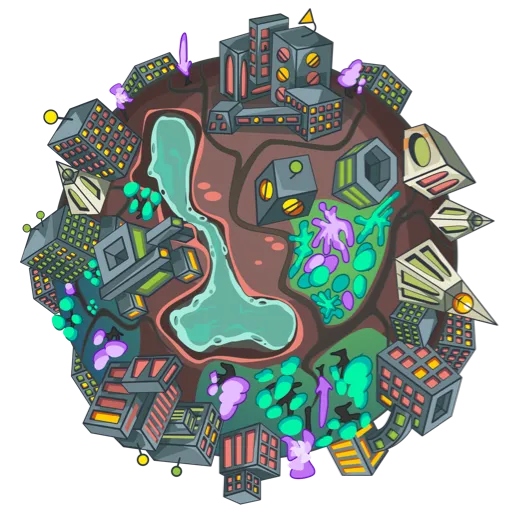
AI升学规划星球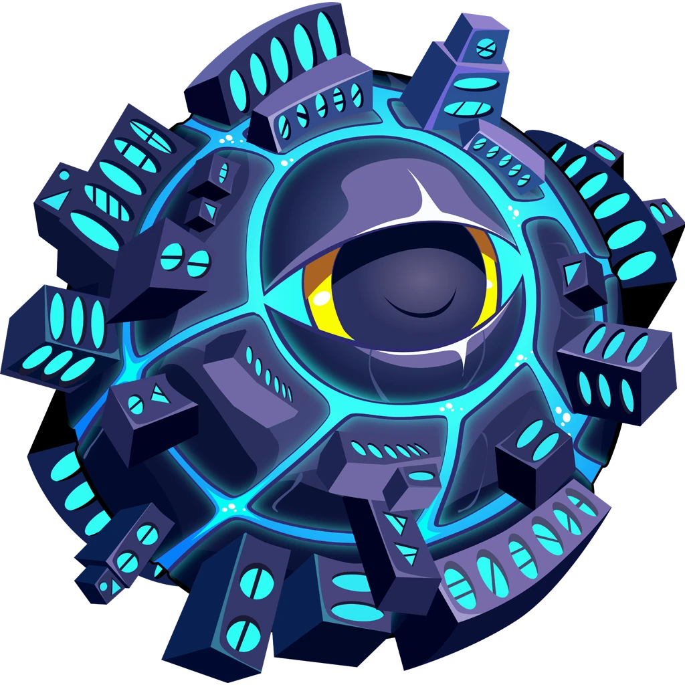
AI网络安全星球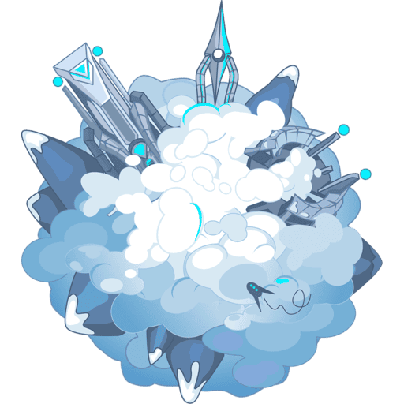
AI故事创作星球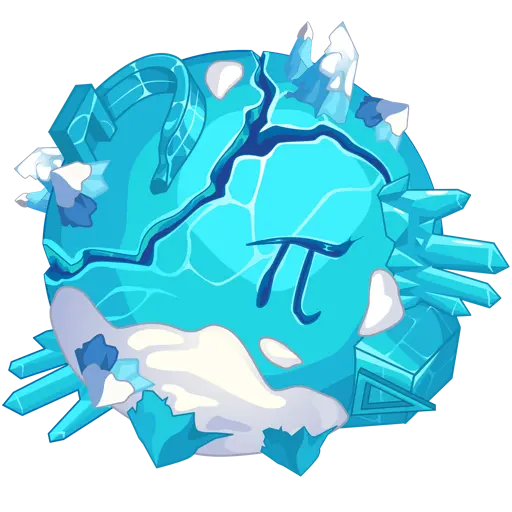
AI编程开发星球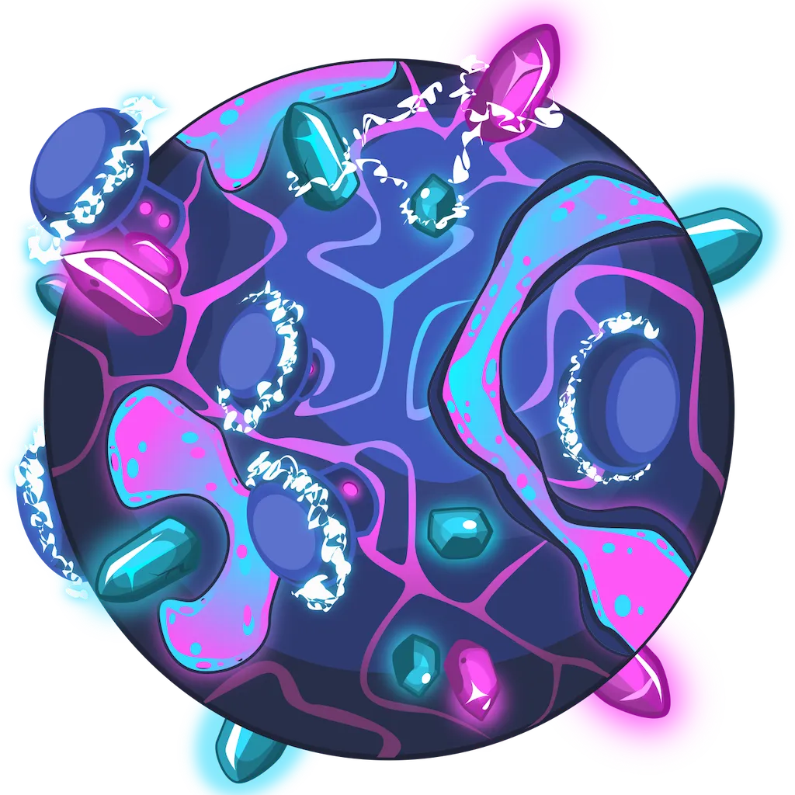
AI创意设计星球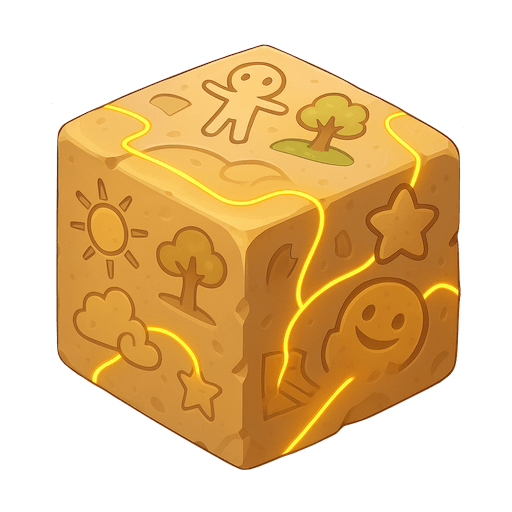
AI自由创造星球
从想法出发，做出自己的作品
画一幅画、写一个故事、做一个网站、开发一个小工具，把脑海里的创意一步步变成真正能看到、能使用的作品。
不只会用AI，更会用AI创造
从AI绘画、故事创作，到网站、APP、数据分析和智能应用，让孩子学会把AI真正用到创作和解决问题中。
学得越多，作品越丰富
故事、海报、网站、小游戏、数据报告、智能小程序……孩子每学一个方向，都能留下属于自己的创作成果。
完整课程体系
从启蒙到进阶，每个孩子都有适合自己的AI起点
覆盖小学、初中、高中不同学段，根据年龄、基础和兴趣选择合适内容。可以从启蒙开始，也可以直接进入应用、开发和项目实践，让每个孩子都能从适合自己的起点开始学。
11大课程系列
覆盖创作、应用、开发、数据、项目实践、升学规划、网络安全等多个方向。
485个学习任务
从理解、模仿到独立完成作品，让能力在持续实践中一步步提升。
200+标准课时
内容完整、方向丰富，满足不同年龄和不同基础孩子的长期学习需求。
选择自己的起点
不同学段，学不同深度
从兴趣和创作开始
通过AI绘画、故事创作、创意设计等内容，让孩子认识AI、敢于表达，并开始完成自己的作品。
- AI创作启蒙星球AI画画、趣味游戏、方言互动、创意表达，让孩子轻松开始用AI创作。
- AI创意设计星球做AI绘画、故事、海报、网站、小游戏和数据作品。
- AI故事创作星球给古诗配图、改编故事、创作传说和悬疑故事，完成自己的图文作品。
孩子的成长敢尝试 · 会表达 · 爱创作
从创作走向实际应用
通过网站、APP、智能工具、数据研究等项目，让孩子把想法真正做出来，并学会用AI解决具体问题。
- AI编程开发星球做网站、天气APP、小游戏、绘画APP、地图应用。
- AI智能应用星球做趣味测验、猜你喜欢、结果预测和互动小工具，让孩子看到AI怎样解决实际问题。
- AI数据研究星球做数据图表、趋势对比、结果分析和研究报告，让孩子学会从数据中发现规律。
孩子的成长懂逻辑 · 会应用 · 能解决问题
从应用走向项目实践
进一步学习智能开发、项目实践、升学规划等内容，让孩子能够完成更复杂的项目，探索适合自己的发展方向。
- AI智能开发星球做图片识别、虚拟宠物、互动角色和智能小程序，把创意变成能运行的作品。
- AI项目实践星球做活动海报、邀请函、演讲稿、正式邮件和完整活动方案。
- AI升学规划星球做兴趣分析、选科方案、竞赛计划和成长规划，帮助孩子更早找到适合自己的方向。
孩子的成长会实践 · 能规划 · 独立创造
跨学科学习
AI连接七大学科，帮助孩子理解更深、掌握更牢
融合语文、数学、英语、科学、音乐、美术、信息技术等多门学科，把抽象知识变成可以观察、操作、创作和验证的内容，帮助孩子理解得更深、记得更牢、掌握得更扎实。
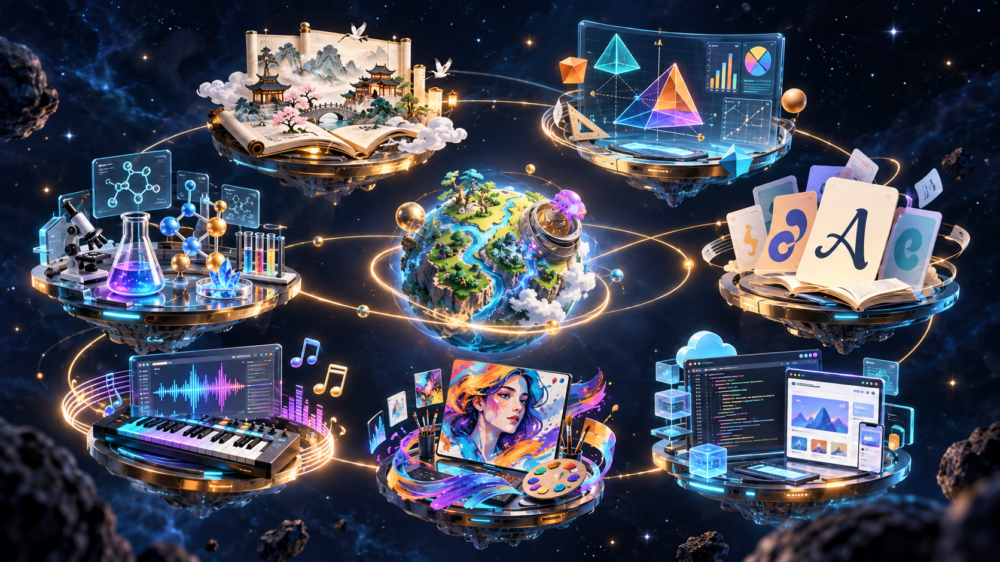
语文数学英语科学音乐美术信息技术
更会表达
语文 + 美术 + 信息技术
一本故事，做成互动作品组织情节、设计画面、编写交互，让表达和逻辑一起成长。
更会思考
数学 + 科学 + 信息技术
一个问题，做成可视化探索观察图形、分析数据、验证想法，把抽象知识变成看得见的变化。
更会创造
英语 + 音乐 + 创意表达
一个主题，创作不同表达从英语故事到声音与画面，探索知识和创作之间的连接。
项目实战
每学一课，都有拿得出手的作品
丰富项目实战，边学边做
语文 × 3D 探索点击体验 →
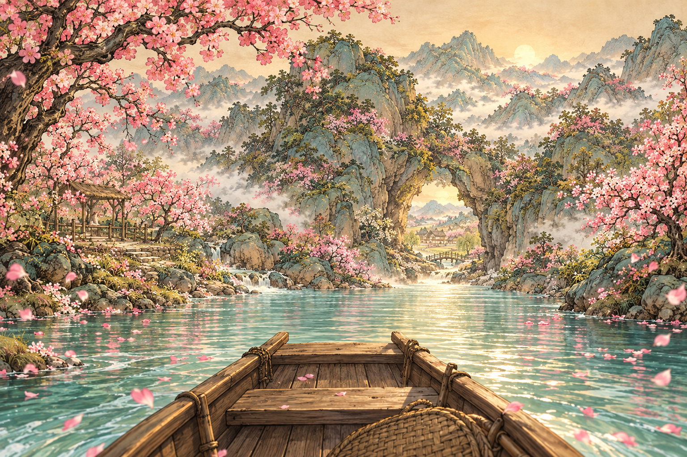
桃花源寻境
循溪乘舟，逐段解锁桃林、山口与村落；寻找原文线索、盖下寻境印章，把古文阅读做成沉浸式 3D 游戏。
数学 × 可视化点击体验 →
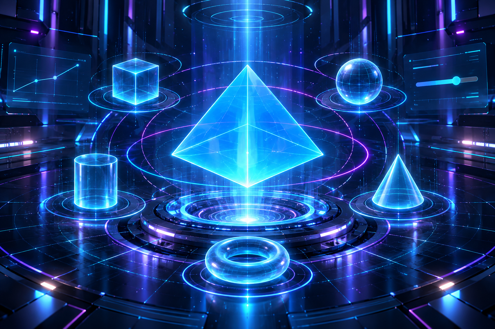
几何能量站
操纵六种立体形体，旋转、切片、调整参数，观察体积、表面积与曲线同步变化，解锁几何能量挑战。
英语 × 游戏化点击体验 →
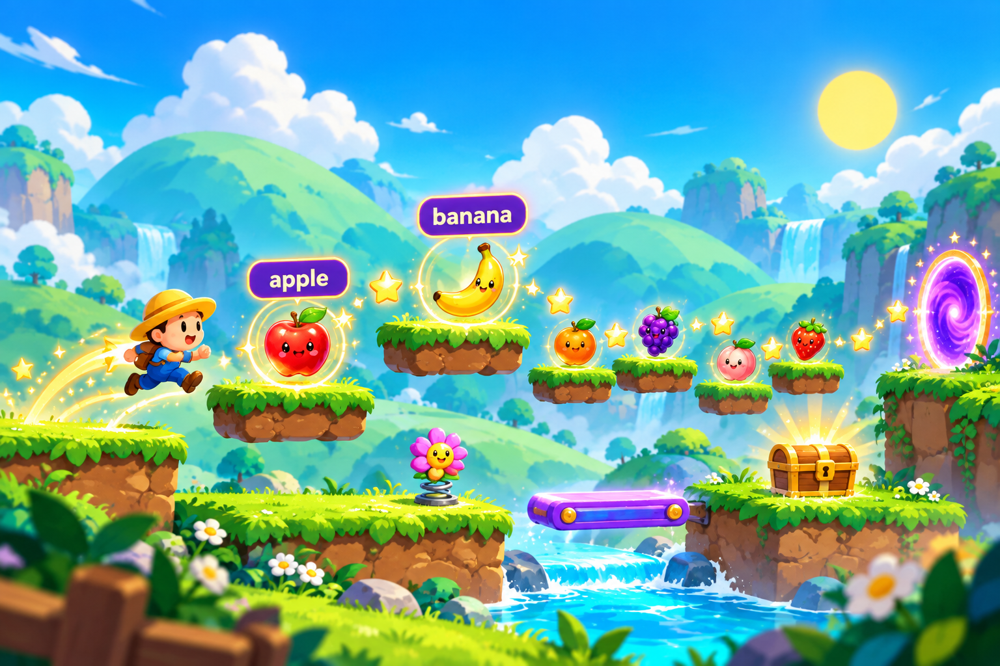
水果词语大冒险
跑跳收集六个水果单词，搭平台、踩弹跳花、开启词语门，让英语词汇变成一场有声有色的闯关冒险。
科学 × 探究点击体验 →
神秘样品侦测
拿起滴管，为三杯未知样品加入指示剂；观察独立显色、对照色表，找到隐藏的酸性样品。
不止这些，还有更多创作方向
- 阅读理解变成游戏、名著做成知识闯关游戏
- 诗词自学网页 App、游戏化背单词网站
- 英语写作指导网站、英语口语 AI 陪练
- 数学几何可视化、AI 化学实验室、创意短片、知识卡片
配图为课程创作方向示意，具体作品任务以课程安排为准。
安全合规
孩子用得安心，家长放得下心
对标《中小学生生成式人工智能使用指南（2025 年版）》
数据隐私保护：
严守隐私底线，孩子信息不外泄
内容安全监管：
保障内容向善，输出安全可控
防沉迷与学术诚信：
防止技术依赖，学习健康有序
工具准入管理：
符合国家政策与准入要求
国产大模型 · 一个账号
一个账号畅用多个国产大模型
DeepSeek通义千问豆包智谱MiniMaxKimi
模型和安全管理功能的可用范围，以所购账号实际服务为准。
使用场景
孩子什么时候学？
放学后 · 在家自主学
孩子写完作业主动闯关，不再抱着手机刷视频
周末 · 在家自学
家长忙自己的，孩子自己学，安全又省心
寒暑假 · 集中自学
长假系统进阶，开学不落后
课外活动 · 素养拓展
兴趣班之外，多一项 AI 素养傍身
做决定前，先了解清楚
课程说明
- 课程规格
- 11 大课程系列 / 485 关卡 / 200+ 课时
- 课程形式
- 网页版，支持电脑或平板，无配套实物 / 教具
- 适用人群
- 8 岁起；小学到高中，按不同星球分段
- 使用方法
- 孩子在电脑 / 平板上登录网站自学，无需家长陪同，单次约 1 小时
- 服务权益
- 账号有效期 1 年
- 技术底座
- 全程使用国产大模型，一个账号畅用多个模型
孩子没有基础，可以开始吗？
可以从 AI创作启蒙星球 开始，在有引导的游戏任务中认识 AI、练习提问。AI创作启蒙星球 适配小学 3–6 年级，选择时也要结合孩子的阅读和电脑操作能力。
课程是怎么逐步进阶的？
以“学习 → 二创 → 创作”为路径：先理解示例，再修改和优化，最后探索自己的主题。已开放课程从 AI创作启蒙星球、AI创意设计星球 到 AI自由创造星球，后续系列按产品进度逐步开放。
家长不懂 AI，需要一直陪着吗？
课程支持孩子跟着任务自主探索。初次使用时，建议家长帮助登录、熟悉操作，并一起约定学习时间；日常可以通过孩子分享的作品了解他学到了什么。
手机能上课吗？需要安装软件吗？
课程通过网页访问，无需安装客户端。建议使用电脑，或配有键盘的平板，以便输入提示词和进行项目创作；本详情页支持手机阅读。
购买后能使用哪些课程与模型？
具体包含的课程许可、开放系列与模型功能以所购买的账号权益为准。购买前可通过官方产品入口确认当前开放内容和服务范围。